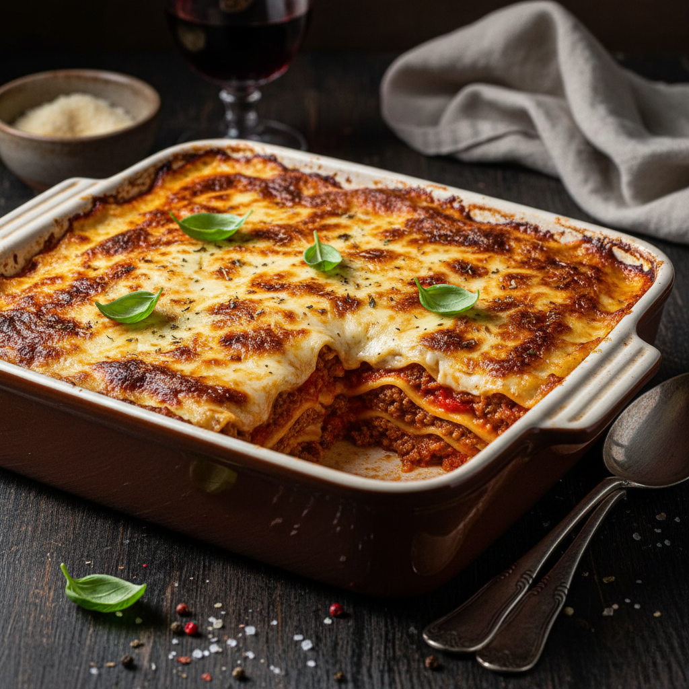
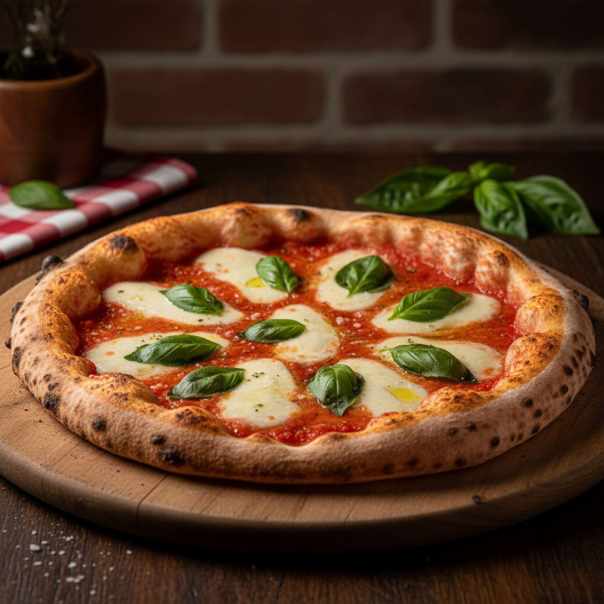
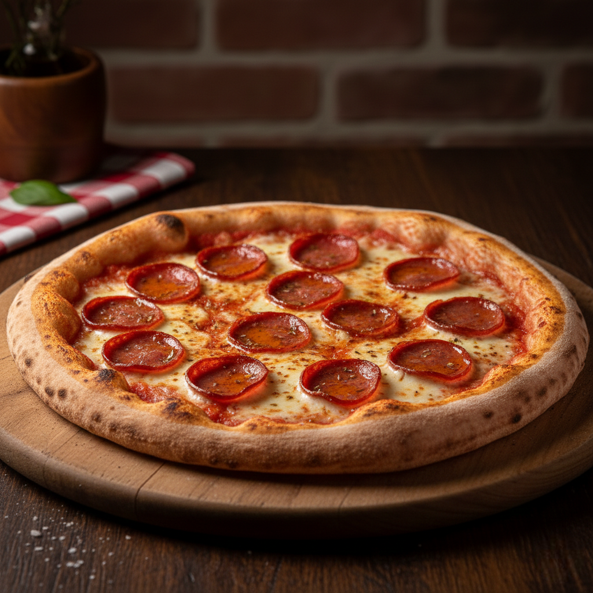
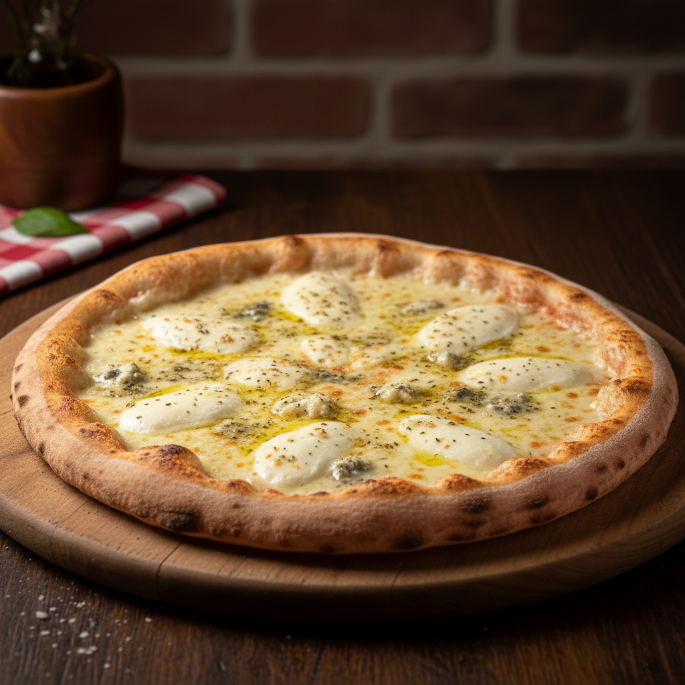
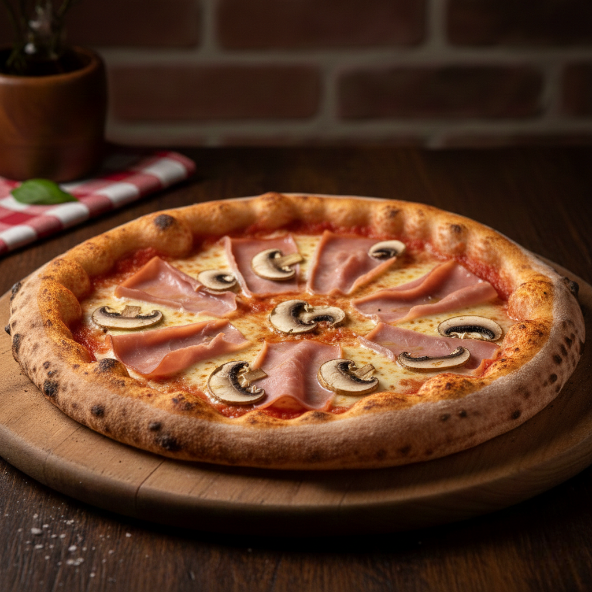
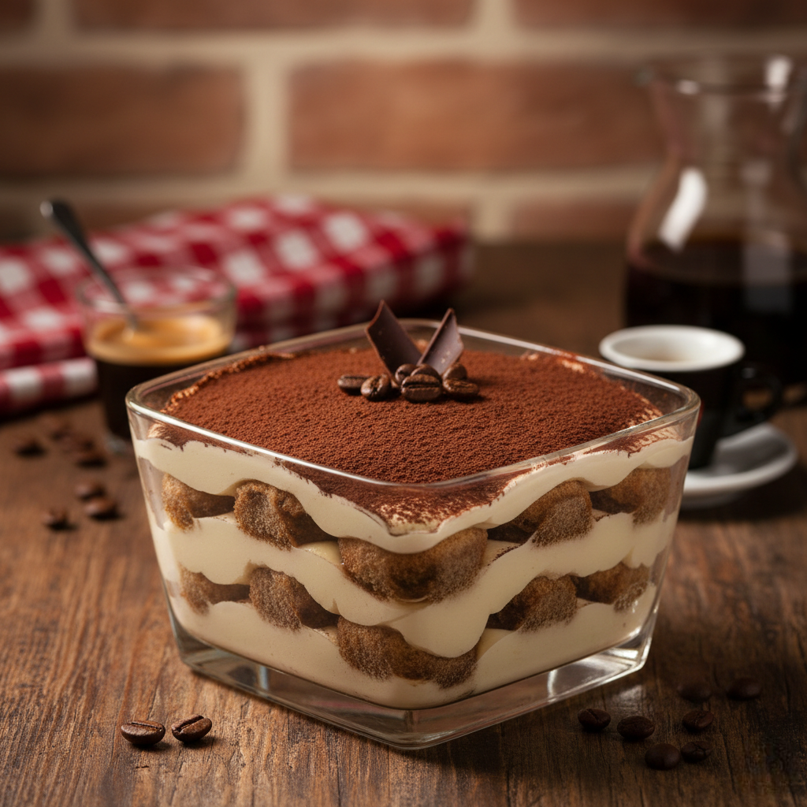
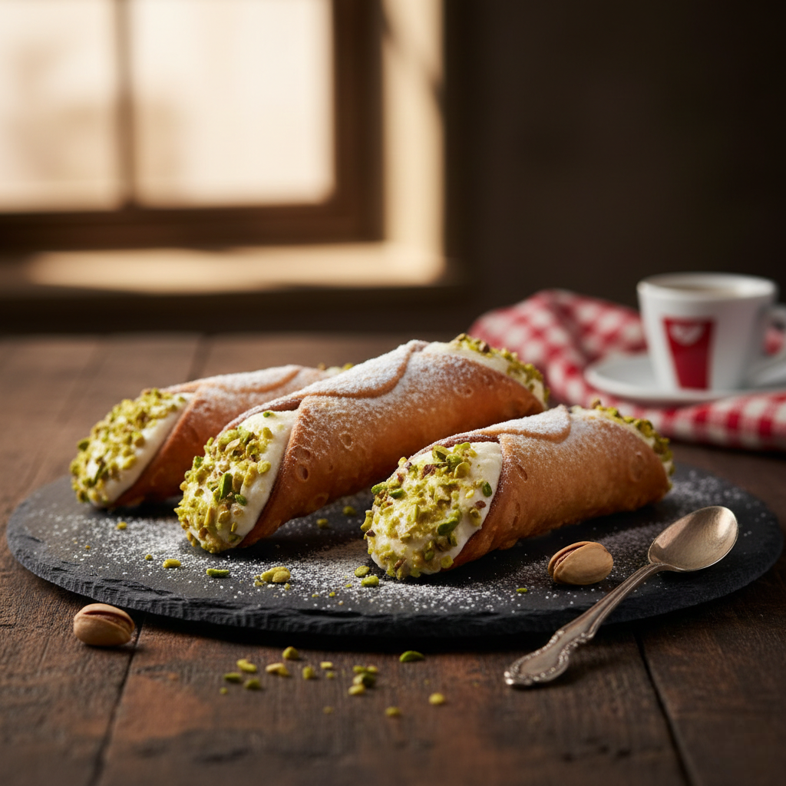

Carta
Entrantes

Bruschetta con tomate
Pan rústico tostado con tomate fresco, albahaca y aceite de oliva virgen extra.

Carpaccio de ternera
Finas láminas de ternera con rúcula, lascas de queso parmesano y limón.

Tabla rústica italiana
Selección de embutidos italianos (jamón curado, salami, mortadela), quesos y aceitunas.

Berenjenas a la parmesana
Pasta

Espaguetis a la carbonara tradicional
Con guanciale, huevo, queso curado y pimienta negra.

Tagliatelle con ragú casero
Pasta fresca con salsa de carne cocinada a fuego lento.

Lasaña al horno
Capas de pasta fresca con carne, bechamel y salsa de tomate gratinada.
Pizzas

Margarita
Tomate, mozzarella fresca y albahaca.

Diávola
Tomate, mozzarella y salami picante.

Cuatro quesos
Mezcla de quesos italianos fundidos.

Jamón y champiñones
Tomate, mozzarella, jamón y champiñones frescos.
Postres

Tiramisú de la casa
Con café y crema de mascarpone.

Panna cotta
Con salsa de frutos rojos.

Cannoli sicilianos
Rellenos de ricotta dulce y pistacho.
Bebidas
Vino tinto
Vino blanco
Lambrusco
Chianti
Refrescos
Agua mineral